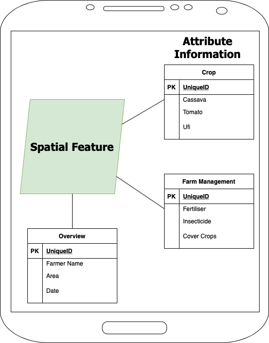
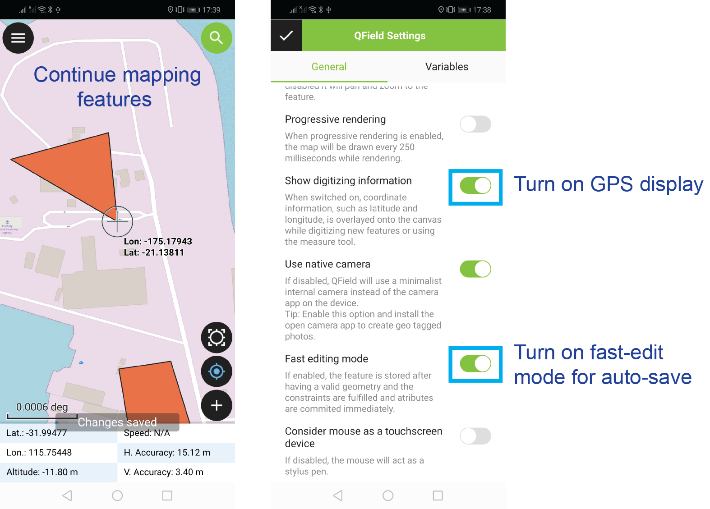

Tonga Crop Survey - Training
Overview
Use QField for mapping farms and completing crop surveys.
QField

-
QField is an open source mobile GIS
-
QField is based on QGIS
-
Map landscape features
-
Collect attribute information
-
Maps and forms
QField and Crop Surveys
Fast data capture, more information, better decisions!

QField in Action - Fiji and Tonga
Training Objectives
-
Open QField on a mobile device
-
Open a QGS project in QField
-
Map a landscape feature using QField
-
Complete a form
-
Submit a completed a form
Schedule - Next Two Weeks
-
25th September - Introduction to QField
-
28th September - Introduction to crop survey form
-
29th September - 12th October - Crop survey fieldwork
-
Details and logistics
Schedule - Today
-
13:30 - 14:00 - Introductions
-
14:00 - 15:00 - Classroom activity - Complete a form using QField
-
15:15 - 16:00 - Practical activity - Map a feature outside
-
16:10 - Feedback and plans for Monday
-
Details and logistics
Data Management
Data Owners: Ministry of Agriculture, Food, Forests, and Fisheries (MAFF).
Data Access: Restricted to MAFF staff. Do not share data with people from other organisations except with written permission of MAFF CEO. Raw data cannot be modified.
More information here.
Your Responsibilities:
-
Delete data from mobile devices once it has been submitted and you have been instructed to
-
Do not disclose data to any third parties without relevant permissions
-
Do not alter data except to correct data entry errors prior to submission
-
If you are using a MAFF / ACIAR project laptop ensure it is kept secure and NOT used for personal use - this is to keep data secure
Data Management
-
Download QGS project from www.tonga-crop-survey.com to your mobile device
-
Open QGS project in QField and collect data.
-
Every day submit completed forms to www.tonga-crop-survey.com
-
At the end of fieldwork delete QGS projects on your mobile device
Feedback
Please provide any feedback on your experience using QField for crop surveys.
We can use it to improve the tool.
UWA ethics: Any comments you provide will be recorded anonymously and will not be disclosed outside the development team (
more here - information sheet).
Download Training Project
Download Training Project
Unzip the training QGS project. Select crop-survey-forms.zip → unzip / extract to.
Open QField
Download QField from the Google Play Store. Look for this icon to open the app:

Open Training Project

QField Interface

Digitize Mode

Map a Landscape Feature

Continue Mapping and Useful Tips

Test in the Field
-
Test outside - walk around a feature to map it
-
Remember to check the crosshairs to so the map follows your GPS location
-
Submit your data at www.tonga-crop-survey.com
Useful Links: